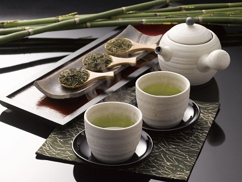
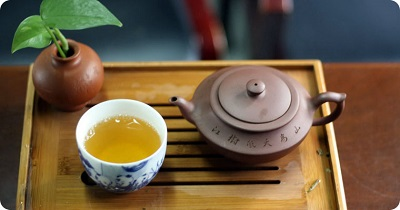

Here at Tae's Tea, we like to serve our customers with the upmost professionalism and courtesy. Whether we serve our customers Traditional Japanese Matcha Tea through traditional customs or serving the delicious, cold, and sweet Taiwanese Boba Tea.
Boba Tea
 Bubble tea is a delicious tea based drink that originated in Taiwan, commonly accompanied by chewy tapioca balls, and with how delicious it is, it isn't a wonder at how it had become a favorite drink in America.
Bubble tea is a delicious tea based drink that originated in Taiwan, commonly accompanied by chewy tapioca balls, and with how delicious it is, it isn't a wonder at how it had become a favorite drink in America.
Traditional Japanese Tea
 Traditional Japanese Tea is one of the most soothing drinking experience we provide here at Tae's Tea Shop. We have staff members who are experienced with making Sencha and Matcha tea through the Japanese Tea Ceremonies; it is an experience that will calm your soul.
Traditional Chinese Tea
 Traditional Chinese Tea is a wonderful experience we offer through a staff member who has studied the art of tea through out China. For this experience, we kindly ask our customers to sign up for a time slot through our website, and experience the wonders of tea that has been made era to era. The very same tea ceremonies used during the Song Dynasty.